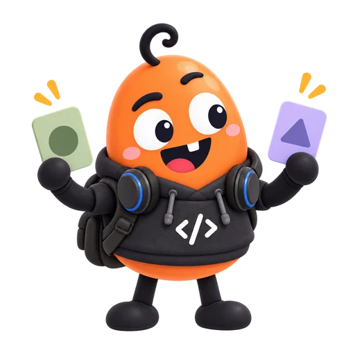

N1 · 칠판에서 이해하는 AI
말하는 AI,
일하는 AI.
LLM → AI Agent → 나의 개인 에이전트
답변→실행→지속
같은 자료로 웹 질문·Agent 질문·파일 명령 비교
AI 경험 없이 시작 · 제품 기준 2026.10.12

N1 · 1 · LLM
LLM은 언어를 생성하는 모델
Large Language Model · 대규모 언어 모델
미리 · 학습패턴을 배웁니다
많은 글과 코드로
모델을 학습
지금 · 답변문맥을 사용합니다
요청과 주어진 자료로
답변을 생성
“짧은 초대장을 써 줘”→함께만나요!
질문할 때마다 모델을 새로 학습하는 것은 아닙니다.
Google · LLM 원리 · 확인 2026-10-12

N1 · 1 · LLM
왜 세상이 주목할까요?
기능마다 메뉴·규칙을 익히기→하던 말로 원하는 결과를 설명하기
01 · 접근성말이 인터페이스
“세 줄로 요약해 줘”
02 · 범용성한 모델, 여러 일
요약 · 번역 · 분석 · 코드
03 · 반복 속도즉시 만들고 수정
“조금 더 쉽게 바꿔 줘”
아이디어를 첫 결과물로 바꾸는 문턱이 낮아졌습니다.
N1 · 1 · LLM
익숙한 이름, 모델과 서비스
모델 이름 / 서비스 이름Claude
Anthropic
Claude 모델군
Claude 앱에서도 사용
모델 이름 → 서비스 이름GPT → ChatGPT
OpenAI
GPT 계열 = 모델
ChatGPT = 사용하는 서비스
모델 이름 / 서비스 이름Gemini
Google
Gemini 모델군
Gemini 앱에서도 사용
중국의 Qwen · DeepSeek처럼 모델 파일을 공개하는 선택지도 있습니다.
Claude · OpenAI · Gemini · 확인 2026-10-12

N1 · 2 · Agent
LLM에 도구와 반복을 더하면
AI AGENT · 목표를 수행하는 시스템판단LLM답변·다음 행동 선택
실행도구읽기 · 계산 · 저장
반복결과 확인필요하면 다시 시도
↶ 도구의 결과를 LLM에게 돌려주고 다음 행동을 정합니다.
LLM은 엔진, Agent는 그 엔진으로 작업하는 시스템.
Anthropic · Agent 구조 · 확인 2026-10-12

N1 · 3 · 같은 요청, 다른 흐름
프롬프트는 같아도, 작업 환경은 다릅니다
“매출 합계를 알려 줘.”프롬프트 = AI에게 주는 질문·지시
브라우저에서 사용웹 채팅
대화에 적거나 올린 자료
+ 서비스에 연결한 도구
작업 공간에서 사용내 PC의 Agent
허용한 폴더의 파일
+ 파일·명령 실행 도구
문장 형식보다 어떤 자료·도구·권한이 연결됐는지가 다릅니다.
N1 · 3 · 같은 요청, 다른 흐름
웹에서 질문하면 답변이 돌아옵니다
기본 웹 채팅 · 도구 사용 없음“매출 10, 20, 30의 합계는?”
내 PC① 브라우저질문을 서버로 보냄
서비스 서버② 서비스 + LLM대화·지침을 넣어 답 생성
내 PC③ 답변 화면“합계는 60입니다.”
남는 것대화 속 답변파일로 보관하려면 직접 복사·저장
LLM이 보는 것은 이번 요청에 전달된 내용.
Google · 언어 모델과 문맥 · 확인 2026-10-12

N1 · 3 · 같은 요청, 다른 흐름
Agent에게 질문하면 파일을 읽어 답합니다
PC Agent · 읽기 질문“매출.csv의 합계는? 파일은 바꾸지 마.”
요청① Agent → LLM질문·사용 가능한 도구 전달
내 PC② 도구 실행허용된 매출.csv 읽기·계산
결과③ LLM → 답변도구 결과를 보고 설명
남는 것답변 + 읽기·계산 기록원본 파일은 그대로
질문에도 도구를 쓸 수 있습니다. 쓰기 작업은 필요하지 않습니다.
Codex · 로컬 파일·도구 · 확인 2026-10-12

N1 · 3 · 같은 요청, 다른 흐름
명령하면 실행 → 확인 → 다음 행동
PC Agent · 파일 생성 명령“매출.csv의 합계를 summary.txt로 저장해 줘.”
Agent의 도구① 읽기매출.csv → 10, 20, 30
LLM이 다음 행동 선택② 계산도구 결과 → 60
Agent의 도구③ 저장·확인summary.txt를 쓰고 다시 읽기
↶각 도구 결과 → LLM → 다음 도구 선택
오류가 나면 수정하거나 도움을 요청
남는 것summary.txt“합계: 60” · 실제 파일 + 확인 결과
Anthropic · 도구 실행과 피드백 · 확인 2026-10-12
N1 · 3 · 같은 요청, 다른 흐름
차이는 어디까지 맡기느냐
같은 “매출 합계” 작업 비교| 비교 기준 | 기본 웹 채팅 | PC Agent |
|---|
| 자료 전달 | 붙여넣기·파일 업로드 | 허용한 폴더에서 도구로 읽기 |
|---|
| 질문 결과 | 대화 속 답변 | 파일·도구 결과에 근거한 답변 |
|---|
| 작업 명령 | 방법·내용을 받아 직접 실행 | 도구로 파일 생성·수정·확인 |
|---|
웹에도 도구를 연결하면 Agent가 될 수 있습니다.
설치 여부보다 도구·권한·실행 환경을 보세요.
N1 · 3 · 같은 요청, 다른 흐름
내 PC에서 실행해도, 모델은 서버에
내 PC · 작업 장소Agent 프로그램
파일터미널브라우저
보통은 제공 업체 서버LLM 추론
Claude · GPT · Gemini
Agent가 실행되는 곳 ≠ 모델이 계산하는 곳.
공개 모델을 직접 구동하면 모델도 로컬에 둘 수 있습니다.
OpenCode · Claude Code · 확인 2026-10-12
N1 · 기초
Muse와 dots, 이어지는 작업
Meta · Muse전용 작업 공간
대화와 연결된 자료를
이어 쓰는 개인 Agent
OpenAI · dots목표를 이어 관리
한 번의 답변을 넘어
작업 상태를 유지
요청 → 작업 → 자리를 비운 동안 이어가기 → 결과 확인
개인 Agent도 모델과 도구를 쓰는 Agent의 한 형태입니다.

N1 · 기초
누가 무엇을 실행할까요?
| 부탁 | 실행과 남는 것 |
|---|
| 합계를 알려 줘 · 기본 웹 채팅 | 전달한 자료 → 모델 답변 |
| 파일을 읽고 합계를 알려 줘 | Agent의 읽기·계산 도구 → 답변 |
| 합계를 파일로 저장해 줘 | Agent의 도구 실행 → 결과 파일 + 확인 |
LLM은 모델. Agent는 모델과 도구로 일하는 시스템.